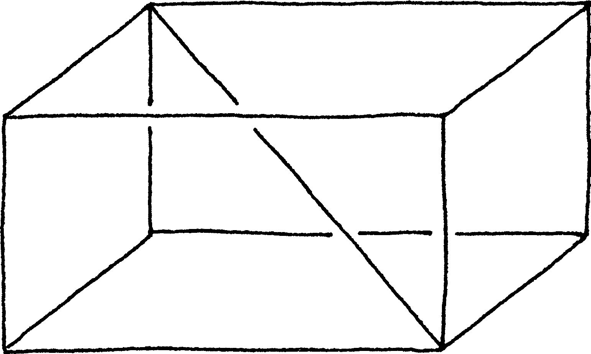
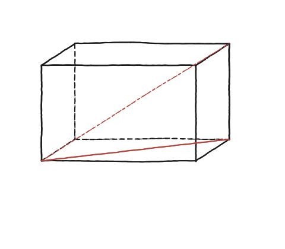
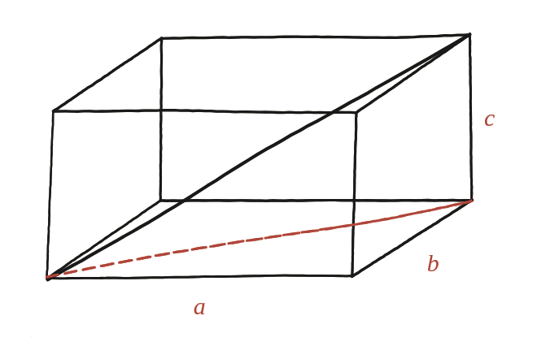

Com depèn la diagonal d'una caixa dels seus tres costats?

Una advertència abans de començar
En un dibuix en perspectiva com el de l'enunciat, els angles rectes de la caixa no semblen rectes: la vora del davant i la de la profunditat formen, sobre el paper, un angle que sembla obert. A la caixa de veritat, però, fan 90°. Cal fiar-se de l'objecte, no del dibuix — és el primer que cal desaprendre en passar de les figures planes a les de l'espai.
Amagar un rectangle dins la caixa
La diagonal d'un rectangle ja se sap calcular amb Pitàgores. La clau és trobar-ne un d'amagat dins la caixa que deixi a mig camí de la diagonal llarga que es vol mesurar. Anomenem a, b i c els tres costats de la caixa (llargada, amplada i alçada). La diagonal de la base —el rectangle de costats a i b— val √(a²+b²) per Pitàgores directe.

Un segon triangle, en un altre pla
Ara hi ha dos triangles rectangles, i no són al mateix pla: el primer —el que acabem de resoldre— està estirat a terra, sobre la base de la caixa. El segon està dret, aixecant-se des d'aquesta mateixa base fins al vèrtex superior oposat. El moviment que ho resol és repetir el mateix argument que abans, però ara en aquest segon pla vertical.
La hipotenusa del primer triangle —la diagonal de la base, √(a²+b²)— fa de catet del segon triangle; l'altre catet és l'alçada c de la caixa, i la hipotenusa d'aquest segon triangle és, precisament, la diagonal llarga que es vol trobar. Aplicant Pitàgores altra vegada: la diagonal de la caixa al quadrat és (√(a²+b²))² + c², és a dir, a²+b²+c².

La diagonal d'una caixa de costats a, b i c val √(a²+b²+c²): dos Pitàgores encadenats, un sobre la base i un altre en el pla vertical que conté la diagonal de la base i l'aresta vertical.
Comprovació
Caixa de 3 × 4 × 12: la diagonal de la base fa √(3²+4²) = 5, i la diagonal de la caixa fa √(5²+12²) = 13. Un cub de costat 1 dona √(1+1+1) = √3 ≈ 1,732. Fixa't en la forma del resultat, a²+b²+c²: un quart costat en dimensions més altes hi afegiria un quart quadrat, i així indefinidament, encara que ja no es pugui dibuixar.